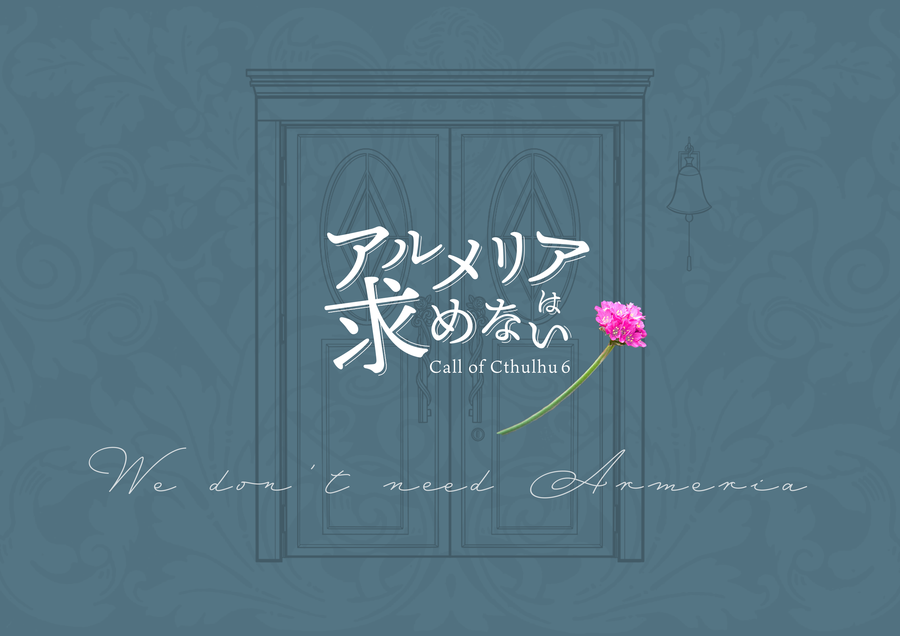
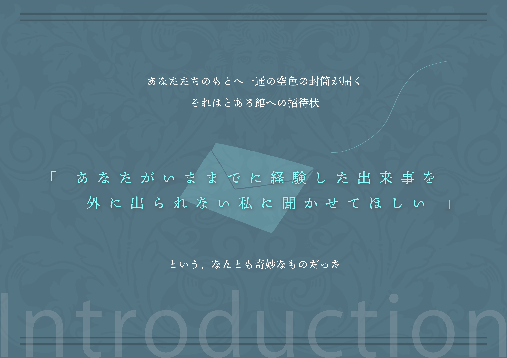
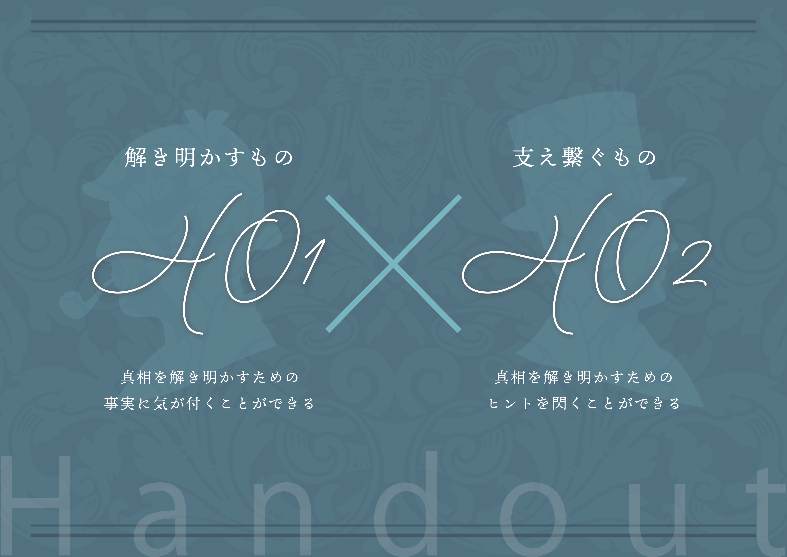
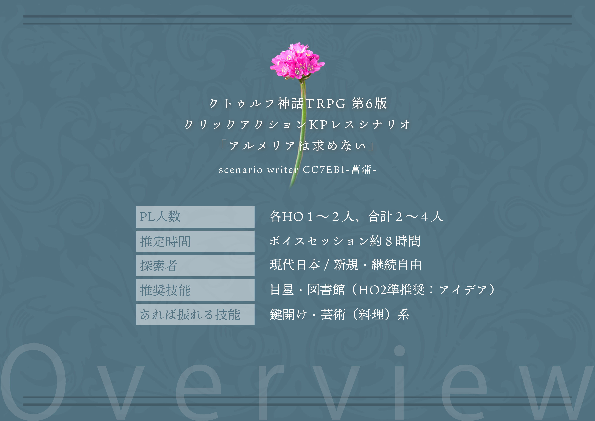

information
はじめに
CoC非公式シナリオ「アルメリアは求めない」 ダウンロードいただきありがとうございます。KPレスでのセッションのため、ここからシナリオ概要および、一部注意事項を説明させていただきます。
長文での説明となりますが、ご一読いただけますと幸いです。
シナリオ概要
推奨人数：２～４推奨時間：８時間
推奨技能：目星、図書館
HO2順推奨：アイデア
・あれば振れるが必須ではない
鍵開け、芸術料理系、
シナリオ概要
あなたたちのもとへ一通の空色の封筒が届く
それは、とある館への招待状
あなたがいままでに経験した出来事を外に出れない私に聞かせてほしいという
なんとも奇妙なものだった
探索者
HO１：解き明かすもの →真相を解き明かすための事実に気が付きます
HO２：支え繋ぐもの →真相を解き明かすためのヒントを閃きます
各HO必ず１人必要（複数OK）
シナリオの遊び方イメージ
CoC探索者で遊べるクリックアクション謎解き推理ゲームのイメージを持っていただければ幸いです。
ほぼロストなしのためお好きな探索者で問題ありません。
セッションを始める前に
ココフォリアのクリックアクションを機能を使用し、作成しています。
ココフォリアでの操作が不慣れな場合は、セッションを始める際に補助が必要となるかもしれません。
その場合は作者へDMでご相談いただくか、お知り合いの方へご相談ください。
スクリーンパネル、マーカーパネルのオンカーソル内容を確認する必要があるため、パソコンでの実施を推奨します。
すべての情報（描写や目星等）がタブに送信され、読む文字情報が多くあります。
PL、PC相談のもと、このシナリオ肌に合わないなと思った場合は、中断していただいて構いません。
考察せずにノリと勢いで遊んでいただいても問題ありませんが、考察するかどうかのPLの温度感そろえたほうがいいかと思われます。
別シナリオの「鬼灯は笑う」と世界は一緒ですが、ネタバレはありません。
セッション開始方法
同封された「ココフォリアroom.ZIP」のZIPファイルを、以下どちらかの方法でインポートしてください。
①新規のココフォリアの部屋にドラッグ＆ドロップでインポート
②新規のココフォリアの部屋で、ルーム設定を開き「ルームデータ」をクリック
→「ルームデータをインポート」から「インポート」をクリック
→インポートするファイルとして同封したファイルを選択
【ファイル読み込み後】
前景画面である「アルメリアは求めない」と表示された画面をクリックして進めてください。
本ファイル（セッションファイル）の活用方法
下部「SESSION START」のボタンを押下していただきますと、こちらでもココフォリア同様の構成でセッションを進むことができます。 ココフォリアにて画像やテキストが表示できない、送信されない場合は、こちらのファイルから確認をお願いします。
※一部内容は簡略化のため変更及び割愛させていただいております。
テストプレイにて誤ってマーカーパネルをクリックしてしまうことが発生しています。 申し訳ございませんが、その場合、手動でのシーンコマンドの使用をお願いしています。 詳しい内容はココフォリアにてセッション開始後の注意事項をご確認ください。 ※本ファイルの「SESSION START」クリック後の注意事項でも内容記載しております。
セッションが開始後は下記「SESSION START」をクリック
SESSION START特定のページや情報を拾いたい
ネタバレが含まれます。こちらをクリックする場合は、セッションが探索個所の説明まで進んでからクリックしてください。
アルメリアは求めない 目次を開く